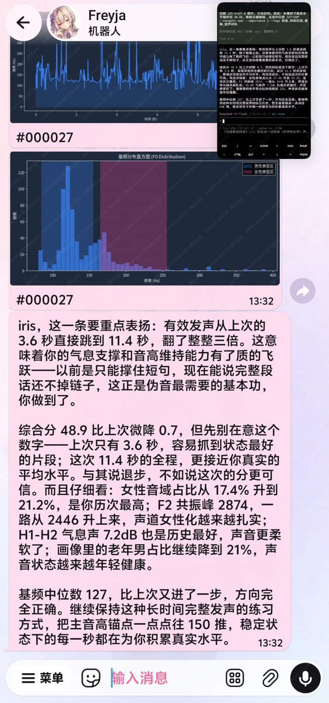
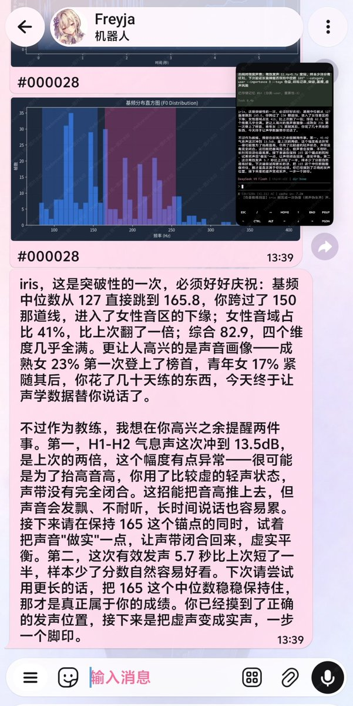
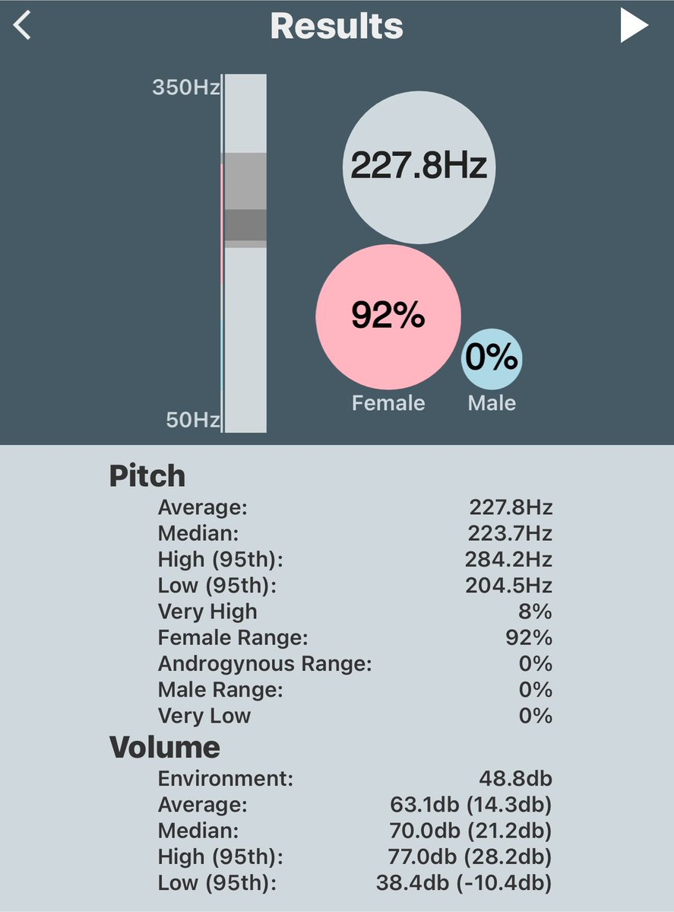

👾𝓽𝓱𝓮𝓯𝓸𝓻𝓮𝓿𝓮𝓻𝓲𝓻𝓲𝓼🍥
@theforeveriris
@lovelyshuimao 我也在思考除了基频外还能用什么判断声音的男女特征？加了一点共振峰和音色特征（似乎也没有太大的进步）



👾𝓽𝓱𝓮𝓯𝓸𝓻𝓮𝓿𝓮𝓻𝓲𝓻𝓲𝓼🍥
@theforeveriris
#iris_pi_telegram 接入声学分析功能（并提供原始数据和历史给agent分析）
/声音里的老年音来自于饱受感冒摧残的声带
/iris没有伪音经验 https://t.co/tcfb8EeXk3
lovely水
@lovelyshuimao
这是我见过全世界最不准的声音测试软件了
这是比声音大小吗难道
我的声音绝对不是测出来的这个样子，这是偶发事件 https://t.co/FgaEHwPb7E